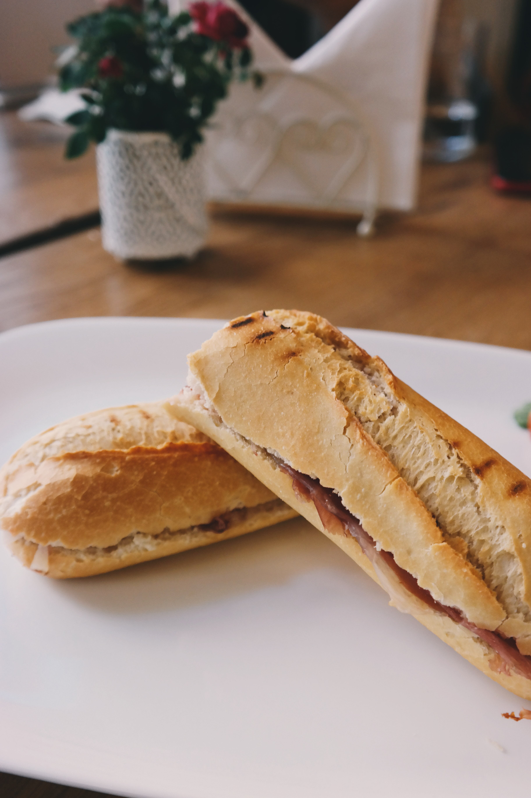

Ham and cheese sandwich

Sandwich
The most consumed sandwich in Argentina, it is always a good time for one of these either toasted or tomato and lettuce.
Ingredients
- Bread
- Ham
- Cheese
- Condiments
Intructions
- Cut the bread in half
- Spread the bread slices with mayonnaise or other condiment
- Add as many slices of ham and cheese as you like
- Optional, Can add tomate slices, letture or another thing, enjoy